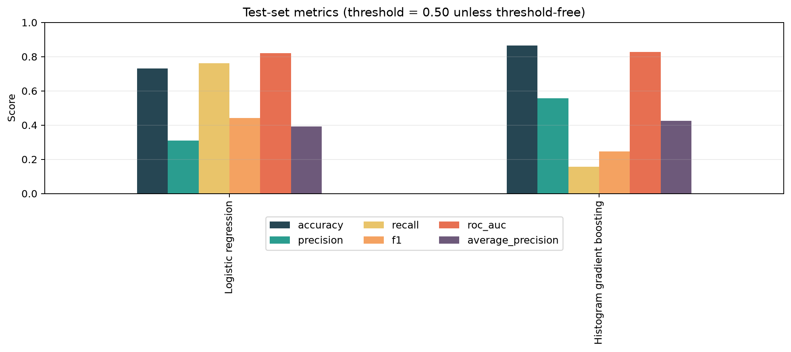
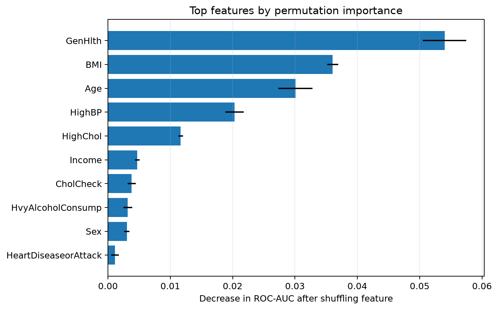

Она заметила больше людей из целевой группы: 76.1% recall. Но часто поднимала ложную тревогу.
Смысл: лучше «не пропустить», но больше ошибок.
Интерактивное исследование: может ли алгоритм находить закономерности в обезличенных анкетах о здоровье?
Это не медицинское приложение. Я взял большую анонимную таблицу с ответами людей на вопросы о здоровье и проверил, может ли компьютер заметить статистические закономерности между ответами и самооценкой статуса диабета.
Открытые обезличенные анкеты CDC: без имён, адресов и личных контактов.
80% таблицы модели использовали, чтобы искать повторяющиеся закономерности.
20% новых анкет были оставлены для честного экзамена моделей.
Я сравнил не только точность, но и то, кого модель замечает или пропускает.

Два набора столбиков: слева простая модель, справа более сложная. Каждый цвет — отдельный показатель качества.
Главная мысль графика: нельзя выбирать медицинскую модель по одной цифре «accuracy».
В этих данных положительных случаев около 14%. Поэтому модель, которая всегда отвечает «нет», выглядела бы точной примерно в 86% случаев — но никого бы не заметила.
Она заметила больше людей из целевой группы: 76.1% recall. Но часто поднимала ложную тревогу.
Смысл: лучше «не пропустить», но больше ошибок.
Она лучше ранжировала записи: ROC-AUC 0.827, но при стандартной настройке заметила лишь 15.8% целевых случаев.
Смысл: высокая общая точность сама по себе не означает практическую полезность.

Чем длиннее столбик, тем заметнее менялся результат модели, когда этот признак перемешивали.
Самыми заметными оказались общая самооценка здоровья, BMI, возраст, высокое давление и высокий холестерин.
Но это не доказывает причину. Модель показывает статистическую связь в этой таблице, а не медицинское объяснение, почему возникает заболевание.
Этот помощник объясняет элементы этой демонстрации простыми словами. Он отвечает только о проекте и не даёт медицинских советов.
Нажми на один из вопросов выше или напиши свой. Например: «Что такое recall?»